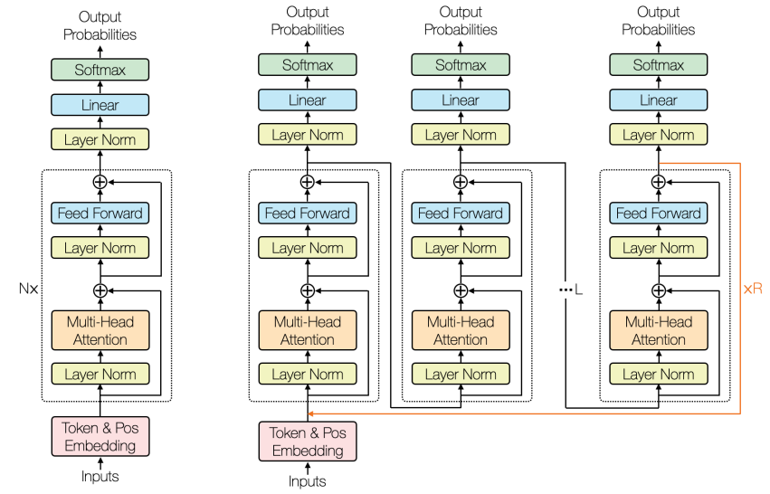
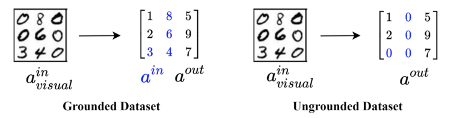

Learning to Solve Constraint Satisfaction Problems with Recurrent Transformers

Constraint satisfaction problems (CSPs) are about finding values of variables that satisfy the given constraints. We show that the Transformer model extended with recurrence is a viable approach to learning to solve CSPs in an end-to-end manner, having clear advantages over the state-of-the-art methods such as Graph Neural Networks, SATNet, and some neuro-symbolic models. With the ability of Transformers to handle visual input, the proposed Recurrent Transformer can straightforwardly be applied to visual constraint reasoning problems while successfully addressing the symbol grounding problem. We also show how to leverage deductive knowledge of discrete constraints in the Transformer's inductive learning to achieve sample-efficient learning and semi-supervised learning for CSPs.
We use a recurrent encoder-only model without masking attention. This allows the

We use the ungrounded visual Sudoku dataset (right) which does not leak any supervision of given Sudoku elements. This means that the recurrent transformer must ground the Sudoku element images using just the solution.” (last row).

We feed eighty-one 28x28 pixel images of a Sudoku board into the recurrent transformer, which has a small convolutional neural network in the embedding layer.


We compare the performance of our full algorithm (green line) to different variations, evaluating the reconstruction quality by measuring the PSNR score as a function of number optimization iterations and running time in minutes. Below, we visually show the inversion results after 200 iterations of our full algorithm (on right) compared to other baselines.